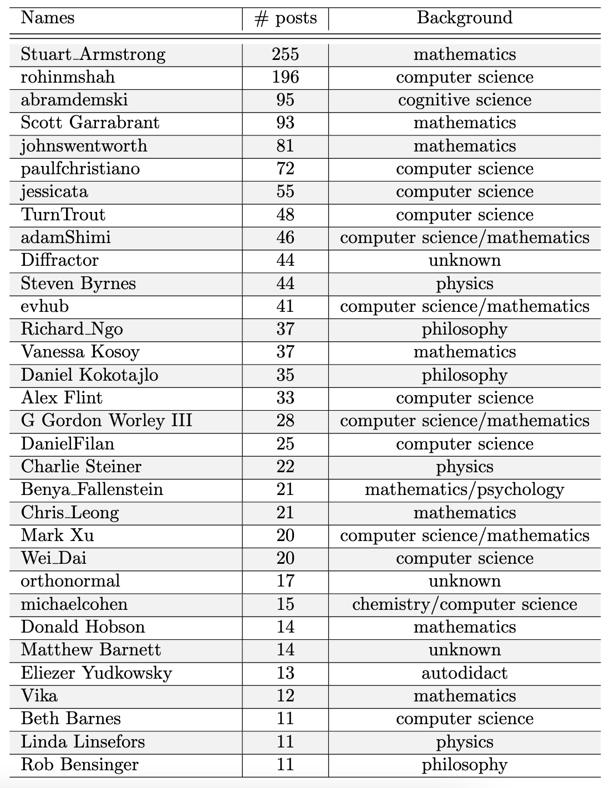
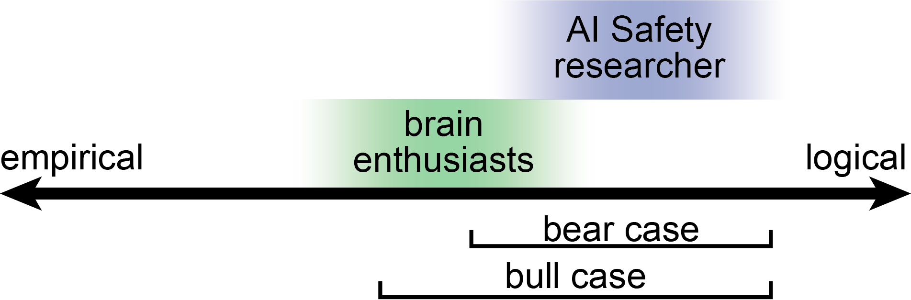

Brain enthusiasts in AI SafetyTL;DR If you are a student of cognitive science or neuroscience and are wondering whether it can make sense to work in AI Safety, this guide is for you |
Updated | ||
|---|---|---|---|
| Author | Jan Kirchner | ||
AI Safety is a rapidly growing field of research that is singular in its goal: to avoid or mitigate negative outcomes from advanced AI. At the same time, AI Safety research touches on many aspects of human lives: from the philosophy of human values, via the neuroscience of human cognition, to the intricacies of human politics and coordination. This interplay between a singular goal with multiple facets makes the problem intrinsically interdisciplinary and warrants the application of various tools by researchers with diverse backgrounds.
Both of us (Sam & Jan) have backgrounds in cognitive science and neuroscience (we’ll use the blanket term ” brain enthusiasts ” from here on). Important characteristics of brain enthusiasts are (see if these apply to you, dear reader):
A propensity for empirical data and experiments.
Regarding coding and mathematics as tools rather than as ends in themselves.
Having accumulated semi-random facts about some biological systems.
While being brain enthusiasts undoubtedly makes us biased in favor of their importance, it also gives us a (hopefully) useful inside view of how brain enthusiasts might meaningfully contribute to AI Safety[1]. In this post, we attempt to shine a light on the current representation of brain enthusiasts in AI Safety and provide some advice on how brain enthusiasts might enter the field.
[1]
While we focus on brain enthusiasts, our ideas might also apply to other fields that concern themselves with the study of complex social or biological systems.
When you hear terms like “AI Alignment”, “AI Safety,” or “AGI”, you probably think of people with a strong technical background, e.g. in computer science, mathematics, or physics. This is an instance where stereotypes are correct:
Using a previously published dataset, we determined the number of Alignment Forum posts per researcher and sorted the resulting table. We then added a “Background” column, where we noted the field in which the researcher obtained their most recent degree[2]. As observed previously, the number of published posts is a long-tailed distribution[3], with Stuart Armstrong dominating over everyone.
[2]
We almost certainly got some of these wrong. If you notice a mistake, please reach out to us in the comments or via DM.
[3]
we need a long-tail distribution journal, similar to the Fibonacci Quarterly, seriously.

Almost everyone on the list has a computer science, physics, or mathematics background. Notable exceptions are three researchers with an “officially different” formal education (Abram Demski, Richard Ngo, and Daniel Kokotajlo) and those researchers who now work on brain-enthusiasm topics:
We’d wager the bet that most people on the list don’t identify with their “formal education” too much and regard themselves primarily as AI Safety researchers - but still, the uniformity of backgrounds is striking. For someone at the beginning of their career who doesn’t have the option to major in “AI Safety”, is a major in mathematics the next best thing? Is a strong technical background necessary or merely sufficient?
There are (at least) two[4] possible explanations for why the composition of the field is biased in favor of researchers with technical backgrounds:
[4]
Other, minor, reasons include:
Either, there is an “efficient market” dynamic whereby only people with a technical background make progress and stay in the field,
Or there is a “founder effect” dynamic whereby the first people entering the field had an outsized effect on the composition of the field later on.
Between these two poles, there is an entire spectrum of what “solving” AI Safety might require:
AI Safety _ almost exclusively_ requires theoretical research. Answers to “foundational questions” (like agent foundations research) tend to require a lot of mathematical and technical knowledge about different theories (see MIRI research guide). This research direction is monolithically important , so a strong technical background is strictly necessary. Brain enthusiasts with arithmophobia might never have a place in AI Safety.
AI Safety _ mostly_ requires theoretical research but also _ some_ empirical research. “Foundational questions” are the most urgent issue, but we anticipate that the situation might change soon-ish. If alignment foundations are established (or look promising), engineers will have a day in the sun, as someone needs to implement these foundations in SOTA AI systems. Brain enthusiasts who picked up solid coding skills “somewhere” (or switched career paths to obtain these skills) might be able to help if there’s a shortage of software engineers.
AI Safety requires _ some_ theoretical research and _ some_ empirical research. Beyond “foundational questions”, which might still be very important , there are also empirical questions about the properties of current & future AI. Answers to these empirical questions are critical for making progress in AI Safety at large. Brain enthusiasts might be well-positioned to investigate empirical questions about future AI (moderate additional training required) and current AI (solid coding skills required).
AI Safety _ almost exclusively_ requires empirical research. We are deeply confused about what AGI is and what its existence would imply. We also won’t be able to answer these questions with theoretical constructs; the ultimate arbiter of truth is experiment, so we have to (figuratively) “go out there and observe”. The empty string is not sufficient input. Brain enthusiasts are well-positioned (no additional training required) to study AGI as it emerges and to describe how it might be dangerous.
The poles of this spectrum appear highly unlikely - pure theory without implementation is as useless as pure observation without foresight[5]. But the intermediate scenarios appear plausible, and we’ll dive into them more in the next two sections.
[5]
By the time we have an AGI to experiment on we might not have researchers to do the experimenting.
On the spectrum from empirical to logical, brain enthusiasts tend more to the empirical pole than the typical AI Safety researcher. The bull & bear case describe two plausible ranges in which researchers could be able work productively on AI Safety.
AI Safety mostly requires theoretical research but also some empirical research.
A bear furiously writing computer code while drinking coffee in a room crammed full of books and papers stacked to the ceiling. #dalle
In this scenario, AI Safety is mostly a technical problem, and the current distribution of backgrounds is near-optimal. To contribute, you want to have solid coding and at least rudimentary math skills. You might start by applying for the AI Safety camp and then for the ML for Alignment Bootcamp. Do some Coursera courses on Deep Learning, and maybe study some good old-fashioned AI. Follow the steps outlined by CharlieRS here. Don’t feel like you have to figure everything out before you can “get started properly” (you’ll pick up things along the way), but realize that technical skills are crucial to contribute to the problem meaningfully.
Your brain enthusiasm background won’t be sufficient to contribute to the field. Cognitive science is kind of a mess, the study of neuroscience generates insights with endless caveats that have little hope of generalizing to superhuman minds, and mainstream philosophy of mind is… still stuck on that zombie thing. Brain-like AGI is not on the table. People have no incentive to follow a blueprint for making AGI more “brain-like”, and they might be correct not to follow it. Our confusion about how the brain works is even deeper than our confusion about AI Safety. Trying to build brain-like AGI is in the same category as “mysterious answers to mysterious questions”.
However, your brain enthusiasm background is not something to be ashamed of either. Realize that you might know more about your field of study (the amygdala? meerkat’s mating rituals? the extended mind hypothesis?) than the median researcher you encounter. Sometimes this is a problem (“law of the instrument”, when all you have is a hammer…), but sometimes the correct response to”my area of expertise seems relevant here; why hasn’t anyone mentioned meerkats yet?” actually is “I should mention meerkats and explain why they are relevant”. Some reasonably well-understood portions of biological intelligence can map onto artificial intelligence. As long as you’re able to explain yourself in the common (technical) vocabulary, your contribution will be valuable[6].
[6]
in expected value
A bull furiously writing computer code while drinking coffee in a room crammed full of books and papers stacked to the ceiling.#dalle
AI Safety requires some theoretical research and some empirical research.
In this scenario, AI Safety could benefit from more empirical input and the current distribution of backgrounds is an artifact produced by something like the founder effect. To contribute, you might have to learn some basic coding skills and technical vocabulary. But don’t spend too much time on this. Your comparative advantage lies elsewhere. Consider applying for the PIBBSS fellowship, but also consider “just start experimenting”. Request research access to the GPT API and ask the model some pointed questions, grab a dataset and investigate the eye color of the prominent researchers in the field[7], or see what you can learn about myopia by looking at people with anterograde/retrograde amnesia.
[7]
we already called dibs on the formal education, sorry not sorry.
Your brain enthusiasm background is your great strength, and it might appear counterintuitive how many low-hanging fruits are for you to pick. Usually, low-hanging fruits are bad (or someone else would have picked them) - but AI Safety might genuinely be in a non-equilibrium state, and some very impactful projects might require little effort. Simply writing a post about what AI Safety looks like through the lens of something you know well could be valuable. It is corny beyond all reasonableness - but you should adopt the abundance mindset.
However, even though your brain enthusiasm background is da shit, please don’t start spamming the Alignment Forum. You might genuinely have important insights, but the ability to communicate them is now more important than ever. Without a shared vocabulary, you will want to invest much effort into expressing yourself well. Use simple sentences. Include many examples. Be patient. And prepare for the possibility that nobody will interact with what you produce for a long time. Even though, as per the assumption of this subsection, your brain enthusiast background is useful, the onus is still on you to demonstrate in what way this is true.
In this section, we want to give you different options and recommendations for projects and topics you could contribute to, depending on whether you are more of a bear or a bull[8]. Consider these “mini-project proposals”. If you’d like to work on one of those, feel free to reach out! Perhaps we can help!
[8]
We suspect that people from fields that are a) not cognitive
science/neuroscience (or a more technical background) and b)
nevertheless interested in AI Safety also read this post. In our
research, we also found many interesting resources for those people.
In this footnote, we want to compile these resources.
See here
for a great collection of topics categorized by unusual backgrounds
(compiled by Nora Ammann, Project Lead for pibbss.ai -> check
this out as well).
Forecasting AI capabilities and analyzing AI takeoff scenarios. One approach for forecasting timelines until the emergence of AGI is to anchor the analysis with what we know about the computational capacity of the human brain. This “Possible further investigation” section might be a great starting point.
Neuroscience could play a big role in deciphering human values. Standard paradigms of reward learning attempt to infer human values by looking at their choices. This probably doesn’t capture everything there is to capture. Cognitive Science and Neuroscience have a rich literature of experiments and frameworks on this topic. Existing reports by Luke Muehlhauser or Kaj Solata are great starting points, but there is a lot more that can be extracted from the literature.
Interpretability _ (or Transparency and Explainability research). Some AI Researchers believe that Interpretability is the ”most valuable current research direction within the class of standard ML research”_. According to Olah, if you have been trying to interpret neural systems up until now, you might find this work considerably easier. A lot of data analysis techniques from computational neuroscience or cognitive science might translate straightforwardly to artificial neural networks. Nonnegative matrix factorization, Granger causality, and seedpoint correlation analysis might all be worth a shot.
Brain-Like AGI Safety. Steven Byrnes, whom we have already mentioned earlier, has written a sequence on brain-like AGI Safety”. He believes that there are two paths towards aligned AI where a brain enthusiast’s perspective could help: “controlled AGIs” (carefully designed and monitored AGI goals and motivations) and “social-instincts AGIs” (reverse-engineered human social instincts) (see post 12 for more info on this). Engaging with his articles (even if only through distillation) appears potentially very high impact.
Human-Computer Interaction.Assuming AGI doesn’t immediately foom, the way humanity interacts with AGI might become critical. Studying human susceptibility to manipulation could provide hints at what bounded AI-assisted warfare might look like. Studying historical changes in values might help anticipate what intentional and unintentional value corruption might look like. Thinking about how humans can leverage existing AI tools might provide a critical headstart for optimally designing future safety technology.
Playing with fire. Some people used to think it was plausible that AGI can be achieved by copying the brain (although the approach is falling out of favor[9]). But even if the secret to AGI is not buried in your neuroanatomy textbook, through some type of convergent evolution AGI might share some features of the human brain. Modularity appears like a plausible candidate. Perhaps there are others?
[9]
The new approach is the much less dignified “GPUs go brrrrrr”.
Exploring directions we haven’t thought of. Maybe you already had ideas when you began reading this article. Great! The above list isn’t intended to constrain your creativity; don’t be afraid to try out things. In fact, we believe that the most impact of a brain-enthusiast AI safety project could be exactly this: contributing an unusual perspective to AI Safety research[10].
[10]
Even if you fail - we believe this is what the EA community is for. The necessary consequence of 80000hours saying that we have to focus on technical AI Safety research (with a technical background) is not that this is the path everybody has to take. We want to have the highest expected value as a community, not necessarily as an individual. Thus, be ambitious and do things that have great upside scenarios - the community is covering you!
If you are still not convinced, consider the information value gained through failing. High-variability projects are lucrative for grantmakers (more information value gained for future grantmaking), giving you a good shot at getting funding (there is a small probability that the projects mentioned above work out).
We were torn between two extremes when composing this post: “the brain is useless” and “the brain is all you need”. Between these extremes, we found a spectrum of research with varying technical and empirical components. Eventually, we decided to present both a pessimistic (bear case) and an optimistic (bull case) of how brain enthusiasts might fit into AI Safety research. What became clear in both scenarios is that there is value in variability, and a nonstandard background can be an advantage more often than not.
While we wrote in an authoritative voice in some places, please read all of this with an appropriate (spoonful or more) amount of salt. While we feel somewhat good about the conclusion that variability can be beneficial, the exact route for brain enthusiasts to contribute to AI Safety is fuzzy. Going down this path will require careful attention to the environment - few have walked it before. Be careful not to trample into a well-kept garden.
We look forward to any questions and/or comments below, or via mail to either of us (you can find our contact info on our blogs: Sam & Jan).
Brain enthusiasts aren’t even getting the idea that they could contribute, because of multiple reasons:
We’re missing a good onramp for them.
Path dependencies - people with a CS inside model are biassed towards their own kin or people with a Neuroscience/CogSci background perceive the field as being too departmentalized because of this
Academia is strongly incentivized for narrow departments - the field is young and people who want to bring AI Safety thoughts into Neuroscience and vice versa have to fight an uphill battle.
Interdisciplinary research seems to be harder and more costly than disciplinary research, because of 1) the difficulty of epistemic translation (creating a common vocabulary to communicate between fields, understanding the relevance of certain insights from an outside field for your own field, and translating knowledge from your field to a target domain), 2) the probability of getting funded for interdisciplinary research seems to be substantially lower in general.
If you have a philosophy background, check this out.
Debating as a method to align agents could be interesting for you if your background is in social sciences (See here and here for more info)